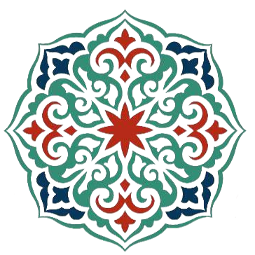

Kazan
Żeliwny kociołCiężki kocioł, w którym wszystko dzieje się powoli: ryż pije tłuszcz i przyprawy, mięso mięknie godzinami. Nic się tu nie śpieszy.

GUZAR Garden · WarszawaRestauracja uzbecka & grill halal · Praga-Południe
Plow z kazana, manty lepione ręcznie i samsa prosto z pieca tandoor — u bram Parku Skaryszewskiego.
Nasza historia
Guzar to po uzbecku miejsce spotkań — plac, na którym zbiega się cała dzielnica. Guzar Garden przenosi ten zwyczaj do Warszawy: duża sala, ogród przy Parku Skaryszewskim, kominek na chłodniejsze wieczory i stoły, przy których siada się na dłużej.
Gotujemy tak, jak w Samarkandzie i Bucharze: plow dusi się w ciężkim kazanie, samsa piecze się na ściankach tandoora, makaron do lagmanu ciągnie się ręcznie, a mięso — w całości halal — trafia prosto na węgiel. Herbatę podajemy w czajniku, bo posiłek zaczyna się i kończy przy herbacie.
Kuchnia uzbecka
Uzbekistan leży na skrzyżowaniu Jedwabnego Szlaku — i takim samym skrzyżowaniem jest jego kuchnia. Perska cierpliwość, turecki ogień, chińskie ciągnione ciasto i step, który nauczył gotować z niewielu składników, ale długo. Je się powoli, z jednego stołu i nigdy w pojedynkę.
Ciężki kocioł, w którym wszystko dzieje się powoli: ryż pije tłuszcz i przyprawy, mięso mięknie godzinami. Nic się tu nie śpieszy.
Rozgrzana glina, do której przykleja się ciasto. Chleb i samsa wychodzą z niej chrupiące z wierzchu i miękkie w środku.
Mięso marynowane w cebuli i kminie, nad samym węglem, obracane ręcznie. Prosty gest, którego nie da się przyspieszyć.
Najpierw herbata, potem chleb łamany w dłoniach, a dania stawia się na środku — dla wszystkich naraz. Gość siada tam, skąd widać cały stół.
„Gościa nie pyta się, czy jest głodny. Stawia się jedzenie na stole.”
Uzbeckie przysłowieZ naszej karty
Miejsce
Jak trafić
al. Zieleniecka 6/8
03-727 Warszawa, Praga-Południe
Metro M2 Stadion Narodowy — 900 m
Tramwaje i autobusy: Rondo Waszyngtona.Płatny parking w pobliżu restauracji
Miejsca parkingowe w okolicy — przyjazd samochodem jest wygodny.Najedź na mapę, aby zobaczyć ją w pełnych kolorach.